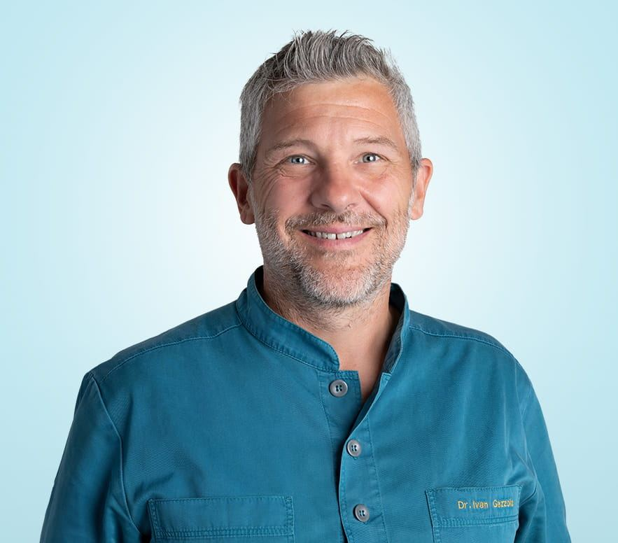

Dr. Ivan Gazzola
Direttore sanitario, specialista in Ortodonzia
Laureato in Odontoiatria a Padova e specializzato in Ortodonzia a Ferrara, ha oltre 25 anni di esperienza internazionale ed è membro di numerose società scientifiche internazionali.
«Ho sempre amato lavorare con i bambini, la loro spontaneità mi offre continue sorprese. L’impegno nel curarli al meglio è sempre più che ripagato.»